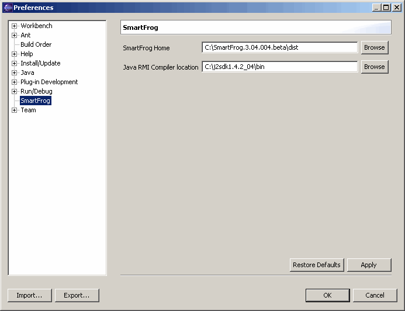

You can specify certain preferences for your SmartFrog projects. These include the location of your SmartFrog installation directory and that of your RMI compiler.
If you have more than one installation of SmartFrog on your system, you may want to configure Eclipse to point to a specific installation location. The libraries in the specified location are the ones that Eclipse uses when compiling your Java files.
The location of your RMI compiler is automatically set based on your JAVA_HOME environment variable. You can change this location if you have more than one JDK installed on your system or, if for some reason, the location is not properly set.
To specify a specific SmartFrog installation location if you have more than one installation on your system.

In the SmartFrog Home text field on the right, the current location specified in the SF_HOME environment variable is displayed. See the Installation Instructions.To specify the location of your RMI compiler if it is not properly set.
You can configure Eclipse to point to specific location for your SmartFrog installation and your RMI compiler.